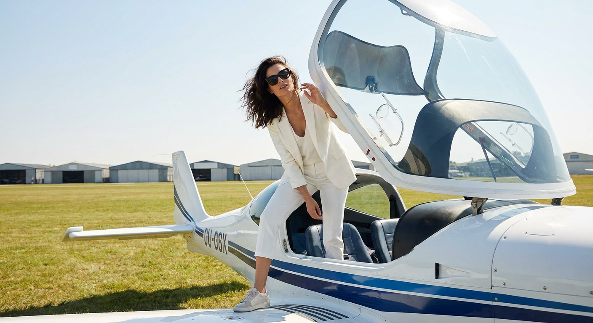
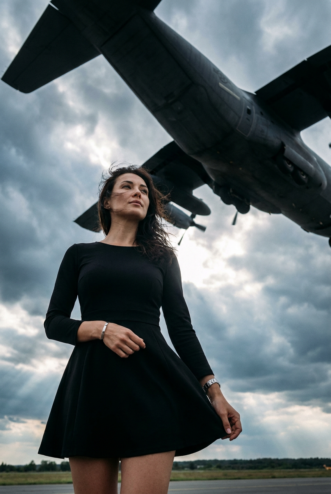
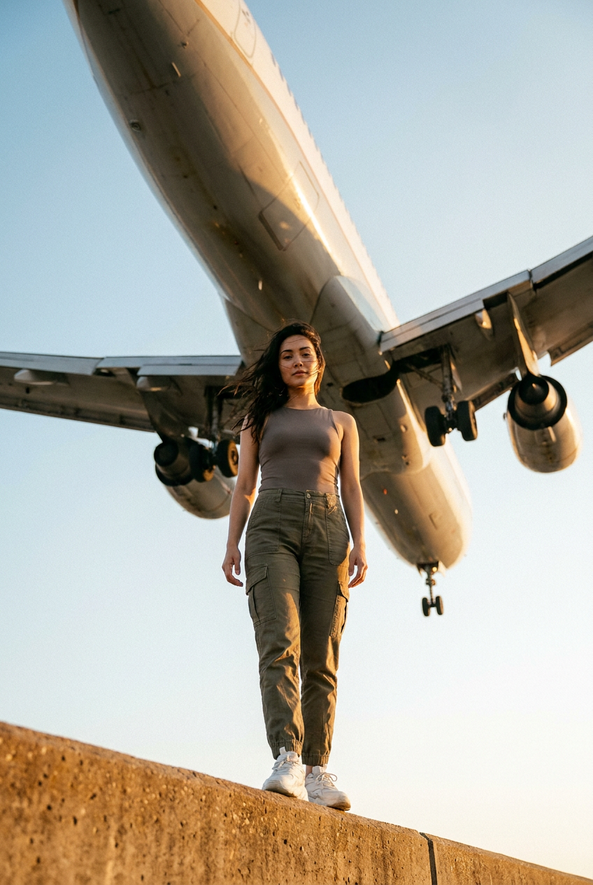
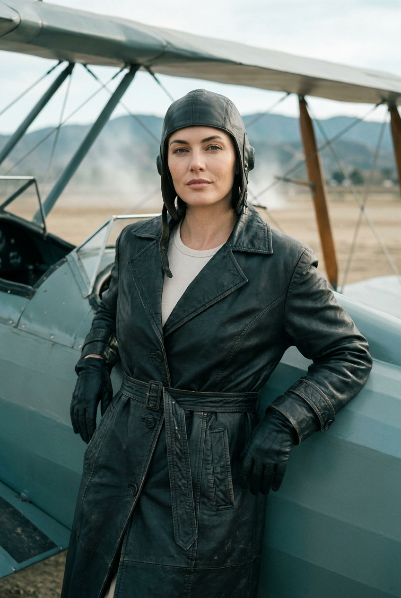
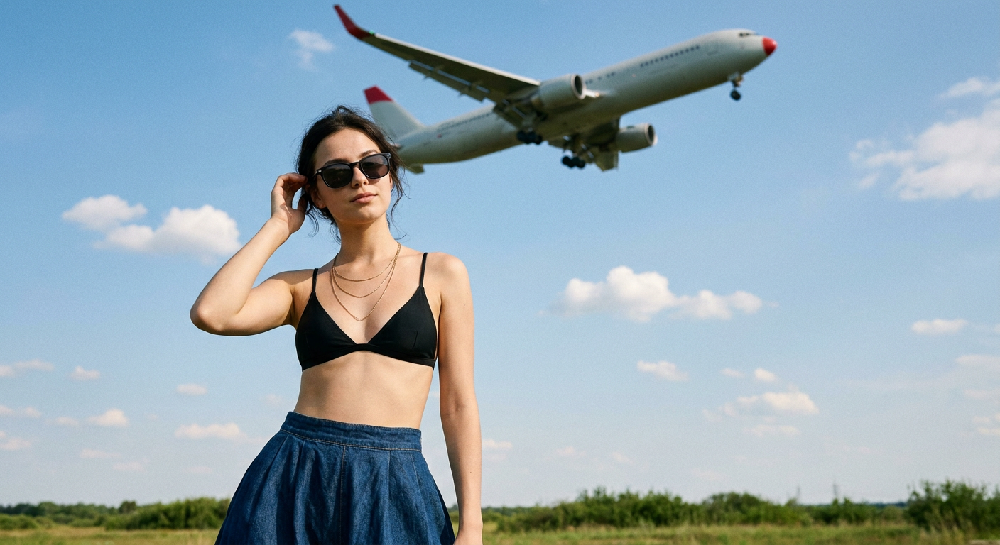
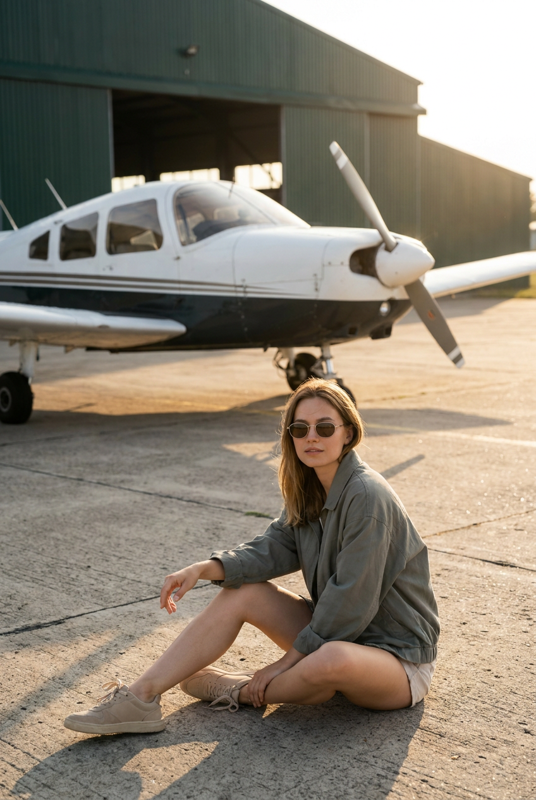
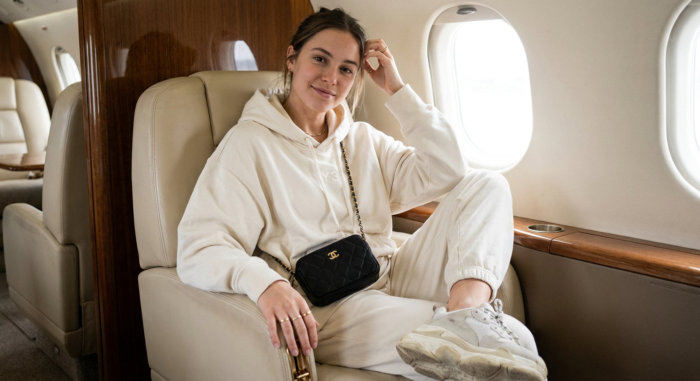
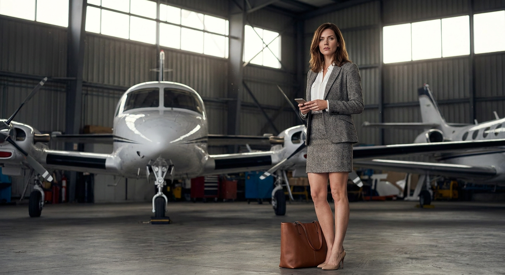
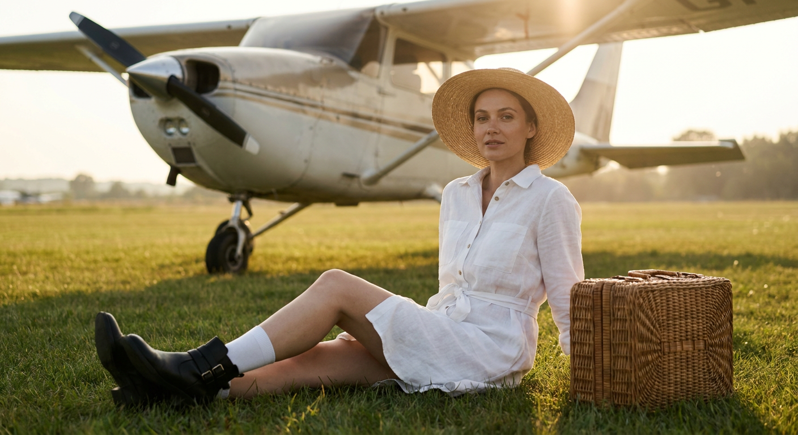
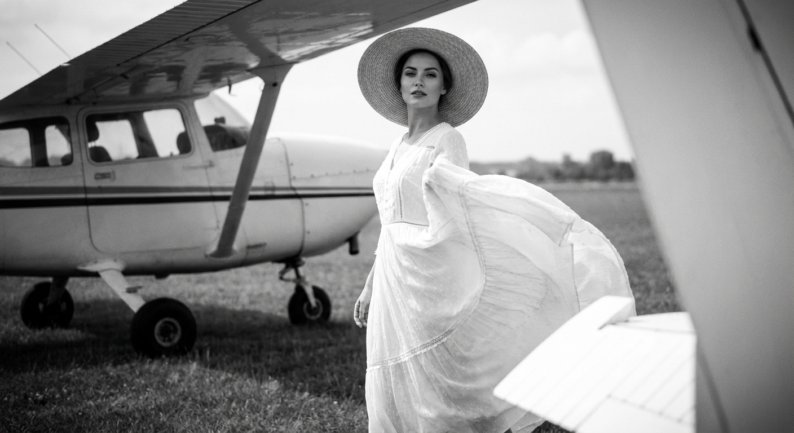

ИИ-фото с самолётом: 10 промптов для нейросети

Снимки с самолётом часто выглядят искусственно: нейросеть путает форму фюзеляжа, ломает пропеллеры и превращает аэродром в случайный фон. Хороший промпт заранее задаёт ракурс, свет, одежду, масштаб объектов и настроение кадра.
В подборке — 10 сценариев для генерации ИИ-фото: от солнечной съёмки у частного самолёта и драматичного кадра с лайнером до роскошного салона, винтажной авиации и чёрно-белого снимка в духе 1930-х.
Как сгенерировать такое фото: пошагово
Нужен снимок анфас при ровном свете, лицо в кадре целиком, без тёмных очков и головных уборов. Разрешение от 1000 пикселей по короткой стороне. Чем чётче исходник, тем точнее модель повторит черты.
Выберите сценарий ниже и нажмите «Копировать» — текст уйдёт в буфер целиком, вместе с командой сохранения внешности. Эта команда стоит первой строкой и отвечает за то, чтобы на выходе было ваше лицо, а не случайное.
Кнопка «Сгенерировать» рядом с каждым промптом открывает модель в новой вкладке. Nano Banana Pro работает с референсом лица — в отличие от моделей, которые генерируют портрет с нуля и узнаваемость теряют.
Промпт — в поле ввода, портрет — через загрузку референса. Порядок значения не имеет, но без референса команда сохранения внешности работать не будет: модели нечего сохранять.
Для сторис и ленты берите 9:16, для превью и обложек — 4:3. Первый результат редко идеален: если поза или свет ушли не туда, поправьте соответствующую часть промпта и запустите заново. Обычно хватает двух-трёх итераций.
10 промптов для генерации
1. У кабины на аэродроме
Строго сохранить внешность по загруженному референсу: черты лица, пропорции, мимику и текстуру кожи без изменений. Фотореалистичная кинематографичная fashion-съёмка на небольшом аэродроме, вертикальный кадр, яркий солнечный день, ultra realistic. В центре стоит женщина с лицом по загруженному референсу: сохранить узнаваемые черты, форму глаз, бровей, носа и губ, овал лица, естественную мимику и пропорции. На ней чёрные солнцезащитные очки, выражение спокойное и уверенное, волосы слегка растрёпаны ветром и уложены небрежно. Рядом открытая кабина небольшого частного самолёта, не пассажирского лайнера: светлый белый фюзеляж с голубовато-синей полосой, прозрачный фонарь поднят вверх, через проём видна приборная панель. Передний план занимает самолёт, за ним травяная полоса, редкие здания на горизонте и чистое светло-голубое небо. Реалистичная фактура металла, естественные тени, съёмка на камеру 50 мм, малая глубина резкости.
2. Самолёт над героиней

Строго сохранить внешность по загруженному референсу: черты лица, пропорции, мимику и текстуру кожи без изменений. Вертикальная кинематографичная фотография с очень низкой точки съёмки, камера направлена снизу вверх, фотореализм, ultra realistic. Девушка с лицом по загруженному референсу, с точным совпадением индивидуальных черт, пропорций, мимики, глаз, бровей, носа и губ. Она находится на открытом аэродроме, ощущается свежий сильный ветер. Над ней в полёте проходит крупный транспортный или грузовой самолёт, снятый почти с земли: массивный фюзеляж, широкое крыло, тёмное хвостовое оперение, диагональный разворот корпуса и монументальный масштаб. Верхнюю часть кадра занимают плотные серо-синие облака, между ними заметны светлые разрывы и подсветка солнца. Цветовая гамма grayscale-blue, драматичная штормовая атмосфера, объёмный рассеянный свет, реалистичная перспектива, объектив 24 мм, высокая детализация.
3. Под крылом лайнера

Строго сохранить внешность по загруженному референсу: черты лица, пропорции, мимику и текстуру кожи без изменений. Кинематографичный вертикальный кадр в жанре aviation fashion, ultra realistic. Девушка с внешностью по загруженному референсу стоит внизу изображения на тёплом шероховатом бетонном парапете аэродрома. Лицо, мимика и пропорции должны точно соответствовать референсу. Камера расположена очень низко, поэтому самолёт почти полностью занимает верхнюю часть сцены и выглядит огромным. Над героиней виден светло-серый матово-металлический фюзеляж, снятый снизу под углом: нижняя обшивка, крылья, два двигателя под ними, элементы стоек и шасси без чрезмерной мелкой детализации. На металле мягкие солнечные блики, заметны лёгкие следы эксплуатации и естественные потёртости. Добавить реалистичные тени, воздушную перспективу, ощущение близости борта, объектив 20 мм, высокая резкость на самолёте и героине.
4. Пилот в винтажной кабине

Строго сохранить внешность по загруженному референсу: черты лица, пропорции, мимику и текстуру кожи без изменений. Винтажная авиационная fashion-съёмка в формате редакционной фотографии, кинематографичный фотореализм, film look, мягкий контраст, естественные приглушённые цвета и лёгкое плёночное зерно. Девушка-пилот с лицом по загруженному референсу, узнаваемыми чертами и естественной мимикой, снята крупным планом у открытой кабины самолёта на земле. У неё уверенное выражение лица и спокойный взгляд, волосы слегка двигаются от ветра. На заднем плане видны крылья винтового самолёта, растяжки и открытый каркас, создающие настроение ранней авиации. Дальше уходят в перспективу размытые холмы и поле, в воздухе тонкая пыльная дымка. Никаких современных ангаров, стеклянных конструкций и спецтехники. Тёплый мягкий дневной свет, объектив 85 мм, малая глубина резкости, фактура старой фотоплёнки.
5. Летний образ у борта

Строго сохранить внешность по загруженному референсу: черты лица, пропорции, мимику и текстуру кожи без изменений. Фотореалистичная летняя fashion-съёмка на открытой площадке, вертикальный кинематографичный кадр, ultra realistic. Девушка с лицом по загруженному референсу стоит на переднем плане у небольшого самолёта. Левая рука поднята к виску и поправляет свободно уложенные волосы, правая расслабленно опущена вдоль тела. На лице тёмные солнцезащитные очки, выражение спокойное, образ непринуждённый. Одежда: чёрный бюстгальтер-бикини или топ на тонких бретелях, поверх лежат тонкие золотистые цепочки, на бёдрах объёмная тёмно-синяя джинсовая юбка с выраженной фактурой денима. Позади зелень вдоль горизонта, высокое голубое небо и небольшие кучевые облака. В фоне виден частный самолёт, его корпус и крыло слегка размыты. Тёплый естественный свет, объектив 50 мм, мягкий bokeh, реалистичная кожа и ткань.
6. Перед ангаром с самолётом

Строго сохранить внешность по загруженному референсу: черты лица, пропорции, мимику и текстуру кожи без изменений. Вертикальная фотореалистичная fashion-съёмка на аэродроме, тёплый дневной свет, cinematic color grading, ощущение настоящего снимка на уровне земли. Девушка с лицом по загруженному референсу стоит перед большим ангаром. Сзади — ровное бетонное покрытие, тёмно-зелёная или оливковая стена ангара и широкие ворота, детали дальнего плана слегка размыты. В центре фона расположен небольшой частный самолёт типа single-engine propeller aircraft, высокоплан, снятый фронтально в ракурсе 3/4. Хорошо различимы носовая часть, лобовое остекление кабины, крылья, стойки и пропеллер. Героиня занимает передний план, её черты, мимика и пропорции совпадают с референсом. Естественная поза, спокойное выражение, реалистичные тени на бетоне, умеренная глубина резкости, объектив 35 мм, высокая детализация без пластиковой кожи.
7. Люкс-салон частного самолёта

Строго сохранить внешность по загруженному референсу: черты лица, пропорции, мимику и текстуру кожи без изменений. Спонтанный фотореалистичный снимок в эстетике iPhone, мягкий естественный свет из окна салона частного самолёта. Молодая женщина сидит в кремовом кожаном кресле рядом с иллюминатором, смотрит прямо в камеру. Одна рука легко касается головы, на лице естественная полуулыбка, поза расслабленная и уверенная. На ней спортивный костюм adidas Y-3: объёмный кремовый худи и свободные брюки в тон, массивные брендированные кроссовки из премиальных материалов с лёгкими следами повседневной носки. На коленях лежит маленькая чёрная кроссбоди-сумка Chanel с золотистым логотипом, украшения минималистичные и деликатные. Интерьер выполнен в люксовом стиле: бежевые кожаные кресла, деревянные панели, аккуратная чистая отделка. Сохранить живую телефонную оптику, небольшую естественную зернистость, мягкие тени, формат 4:5.
8. В авиационном ангаре

Строго сохранить внешность по загруженному референсу: черты лица, пропорции, мимику и текстуру кожи без изменений. Фотореалистичная fashion/aviation-съёмка в крытом авиационном ангаре, cinematic photo, ultra realistic, высокая детализация. Девушка с лицом по загруженному референсу стоит на гладком бетонном или асфальтовом полу, лицо и индивидуальные пропорции сохранены без искажений. Сверху мягко рассеивается свет, видны металлические балки потолка и колонны. Позади героини расположены несколько небольших частных бизнес- или поршневых самолётов: слева читаются шасси и крыло, справа ещё один борт стоит под углом. Центральный светлый самолёт показывает носовую часть, лобовое остекление и корпус, он остаётся главным объектом фона. На полу заметны линии разметки и мягкие тени людей и самолётов. В воздухе очень лёгкая пыльная дымка, без сильного тумана. Натуральные цвета, объектив 35 мм, реалистичная перспектива и металлические отражения.
9. Золотой час на лётном поле

Строго сохранить внешность по загруженному референсу: черты лица, пропорции, мимику и текстуру кожи без изменений. Кинематографичный фотореалистичный кадр в стиле aviation fashion, ultra realistic. Девушка с лицом по загруженному референсу находится на открытом лётном поле, в переднем плане зелёная трава. Съёмка выполнена в golden hour: тёплый контровой солнечный свет, длинные мягкие тени, лёгкая дымка и естественный bokeh на фоне. За героиней стоит небольшой поршневой самолёт, снятый спереди и сбоку в ракурсе 3/4. Видны нос, лобовое обтекание, двигатель с блестящими металлическими и золотистыми деталями, пропеллер, крыло и стойки шасси. Лопасти можно показать слегка замороженными или с очень умеренным движенческим смазыванием. Корпус светлый, бело-серебристый, с реалистичными бликами. Спокойное небо почти без облаков, естественная кожа, объектив 85 мм, фокус на девушке и передней части самолёта.
10. Винтажный кадр 1930-х

Строго сохранить внешность по загруженному референсу: черты лица, пропорции, мимику и текстуру кожи без изменений. Чёрно-белый винтажный фотоснимок в стиле 1930-х, фотореализм, cinematic monochrome, мягкий плёночный контраст и заметная, но аккуратная зернистость. Сцена разворачивается на травяном аэродроме под открытым небом, на дальнем плане деревья и низкие холмы. Слева на переднем плане близко к камере стоит лёгкий поршневой самолёт: хорошо видны крыло, стойки шасси и часть фюзеляжа. Справа крупный белый элемент крыла или обшивки частично перекрывает сцену и создаёт естественную рамку. В центре, чуть правее, девушка с лицом по загруженному референсу смотрит прямо в объектив. На ней большая соломенная шляпа-канотье, естественный макияж и белое воздушное платье с тонкой фактурой и декоративными элементами. Взгляд спокойный и уверенный. Мягкий дневной свет, глубокая перспектива, объектив 50 мм, реалистичная оптика старой камеры.
Что важно учесть в этом стиле
Самолёт лучше описывать отдельно от героини: укажите тип борта, положение в кадре, видимые детали и расстояние до камеры. Иначе модель может смешать кабину, крыло и фюзеляж или заменить частный самолёт пассажирским лайнером.
Для кинематографичного результата задайте оптику и точку съёмки. Объектив 24 мм подчеркнёт масштаб борта, 50 мм даст естественную перспективу, а 85 мм отделит модель от фона. Ракурс снизу, контровой свет и лёгкая дымка помогают собрать выразительную авиационную сцену.
Идеи для вариаций
- Замените дневное солнце на синий час и включите навигационные огни самолёта.
- Добавьте кожаную лётную куртку, шёлковый платок или винтажные очки пилота.
- Перенесите сцену на заснеженную полосу, пустынный аэродром или побережье.
- Попросите сделать журнальную обложку с местом под заголовок и датой выпуска.
- Смешайте аналоговый film look с современной вспышкой и жёсткими тенями.
Как собрать свой промпт
Начните с формата и жанра: вертикальный портрет, editorial fashion или спонтанный снимок на телефон. Затем опишите героиню, одежду и позу. После этого задайте самолёт: тип, ракурс, положение относительно модели, цвет корпуса и детали, которые должны попасть в кадр.
В финале добавьте свет, фон, объектив и ограничения. Для референса лица полезно сделать 3–5 генераций с одинаковым текстом, меняя только ракурс или выражение. Если модель путает объекты, сократите декоративные детали и разделите сцену на передний, средний и задний планы.
Ошибки, из-за которых кадр не получается
- Слишком общий самолёт. Уточняйте, нужен ли поршневой частный борт, грузовой самолёт или лайнер.
- Несогласованный ракурс. Не просите одновременно вид сверху, съёмку снизу и фронтальный портрет.
- Перегруженный фон. Десятки объектов отвлекают модель от лица и главного борта.
- Отсутствие масштаба. Укажите, занимает ли самолёт верхнюю половину кадра или стоит далеко за героиней.
- Сломанные детали. Отдельно попросите корректную геометрию пропеллера, шасси, крыла и остекления.
Частые вопросы
Как сделать такое ИИ-фото бесплатно?
Для первых попыток подойдут Kandinsky и Шедеврум: у них есть бесплатная генерация, но число запросов, скорость и качество зависят от текущих условий сервиса. Krea AI и Arena.ai удобны для сравнения результатов, однако бесплатный доступ может быть ограничен очередью или дневным лимитом. Референс лица поддерживается не во всех режимах: иногда доступно только текстовое описание, а точность сходства заметно меняется от модели к модели.
Как сохранить лицо по референсу?
Загрузите чёткий портрет без сильных фильтров и выберите режим image reference, face reference или character reference, если он есть. В промпте не перегружайте описание лица: достаточно указать сохранение индивидуальных черт и естественных пропорций. Сделайте несколько вариантов с одинаковым seed или настройками, потому что одна генерация не гарантирует точное сходство.
Какой формат выбрать для таких кадров?
Для fashion-сцен лучше использовать вертикальное соотношение 4:5 или 2:3. Формат 9:16 подойдёт для сторис, если самолёт должен вытянуться по высоте. Для кадра с большим лайнером полезен более широкий холст, например 3:4 или 16:9, чтобы оставить место для крыла и не обрезать фюзеляж.
Что делать, если нейросеть ломает самолёт?
Упростите сцену и опишите борт отдельным абзацем. Укажите число двигателей, положение крыла, видимую сторону кабины и нужный ракурс. Не добавляйте одновременно много мелких элементов. Помогает также негативный промпт: без лишних крыльев, деформированных пропеллеров, двойных шасси, кривого остекления и склеенных частей корпуса.